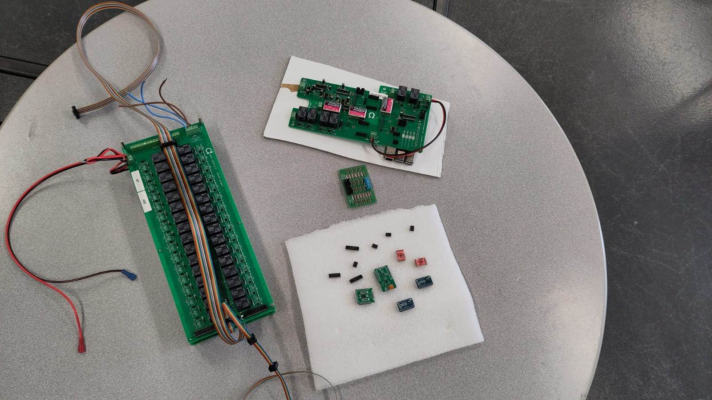
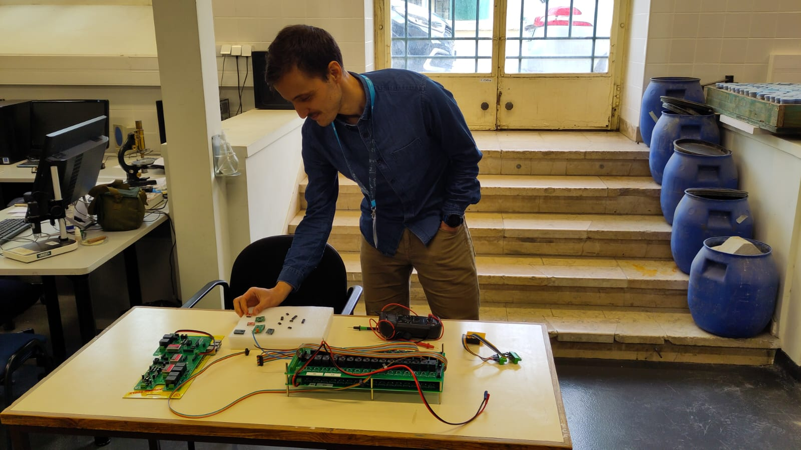
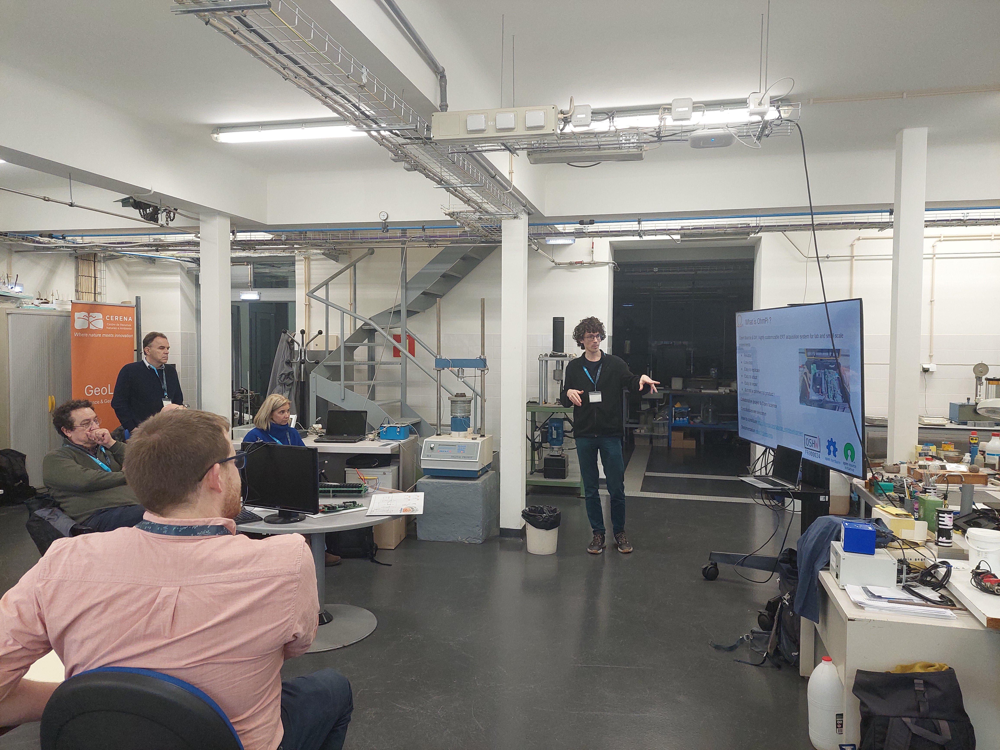

OhmPi: an open-source resistivity-meter: tips and tricks | Guillaume Blanchy (ILVO, Belgium), Benjamin Mary (ICA-CSIC, Department TECH4AGRO) at #Agrogeophy26
by Benjamin Mary | 2026/02/05
At Agrogeophy26, Guillaume Blanchy (ILVO, Belgium) and [Benjamin Mary](…/team#Benjamin Mary) gave a workshop about the Ohmpi’s initiative:

Workshop Overview
Participants were able to place components on the measurements board, assemble an OhmPi system and operate it via the web interface. Guillaume and Benjamin explained how the OhmPi is designed at the hardware (electronics) and software level as well as what are its capabilities and limitations.

They also explored how to diagnose potential errors and fix them, providing participants with practical troubleshooting skills for field applications.

How to cite: Rémi Clement, Yannick Fargier, Vivien Dubois, Julien Gance, Emile Gros, Nicolas Forquet, OhmPi: An open source data logger for dedicated applications of electrical resistivity imaging at the small and laboratory scale, HardwareX, Volume 8, 2020, e00122, ISSN 2468-0672, https://doi.org/10.1016/j.ohx.2020.e00122…